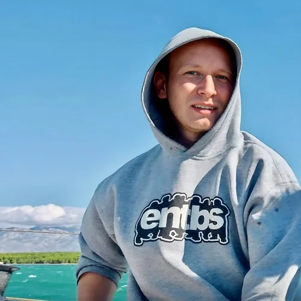

<article class="hero grid">
    <section>
        <figure class="profile">
            
        </figure>
    </section>

    <section>
        <hgroup>
            <h1>Hi, I'm {{ site.author }}!</h1>
            <p>{{ site.description }}</p>
        </hgroup>

        <ul class="social-links">
            <span class="list-header">You can find me on:</span>
            <li>
                <a href="https://www.linkedin.com/in/witteker/">LinkedIn</a>
            </li>
            <li><a href="https://github.com/erikwittek">GitHub</a></li>
        </ul>

        <p>
            If you'd like to, have a look at
            <a href="/photography/">my photography</a> 📷
        </p>
    </section>
</article>
